User manual
Machine control
keyboard_arrow_down
keyboard_arrow_up
The machine control page is the default page. It is displayed when entering the URL http://localhost:4200. On this page the sorting values can be entered, and the machine can be started and stopped. When the machine is currently stopped a category can be selected:
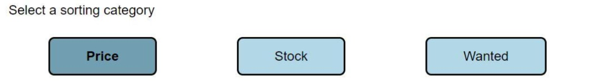
When choosing “Price” or “Stock” the boundary values can be set by using the input fields:
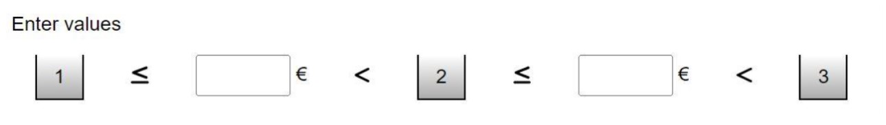
When entering those values all cards with a value lower or equal to the first input value will be sorted into the box with number 1, all cards with a value between both input values (second value included) are sorted into box 2 and cards with a value bigger than the second input value are sorted in box 3. All other cards that couldn’t be recognized will be sorted in the box with the number 4.
When clicking in the input fields a keyboard is displayed to enter the values on a touch screen:
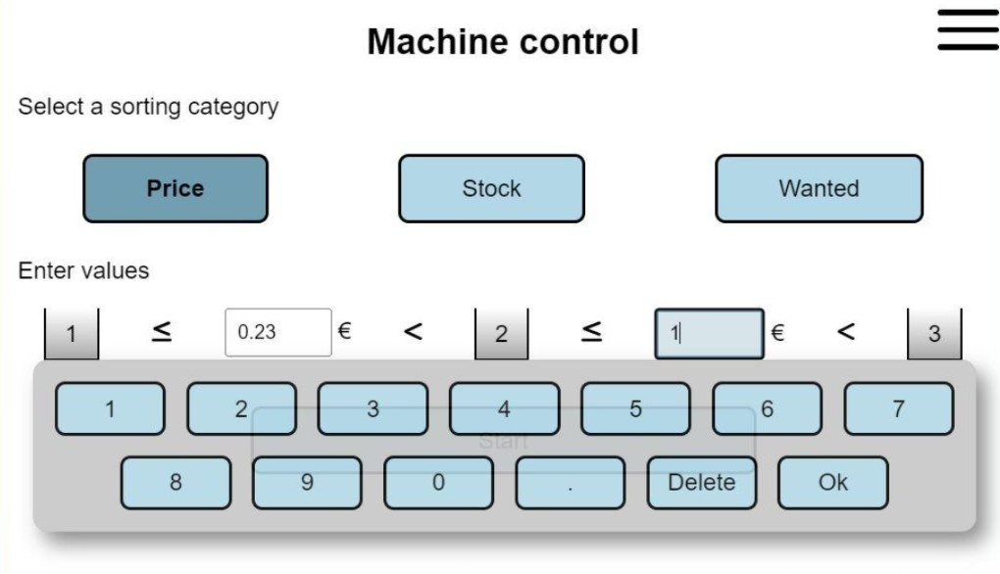
When choosing the category “Wanted” the values are already set and cannot be edited. All cards with the wanted value “true” are sorted in box 1 and all cards with the wanted value “false” are sorted into box 2. Not recognized cards are sorted in the box with the number 4.
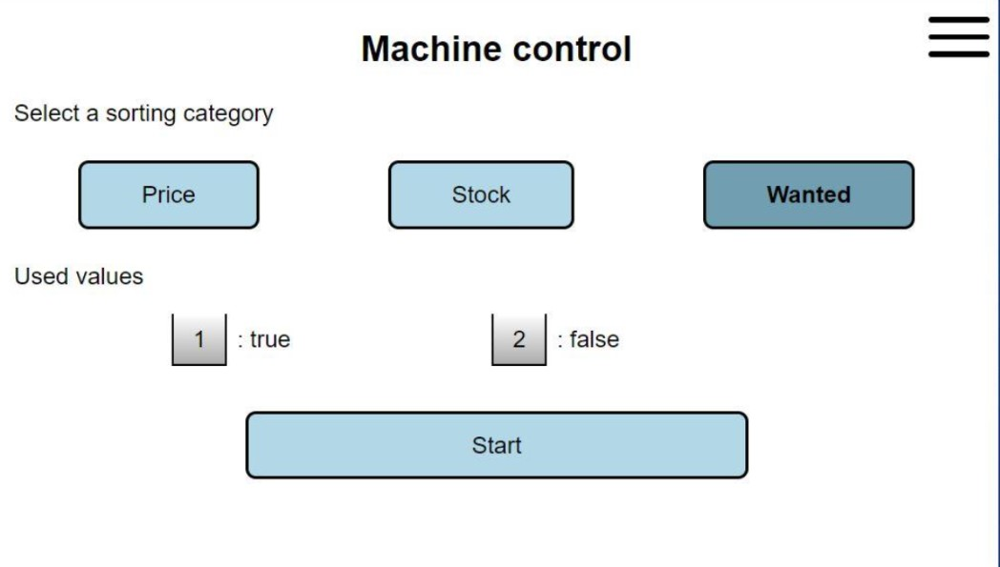
If all entered values are correct the Start button is enabled and the machine can be started. When clicking on this button a start command is sent to the machine. When this command is sent, a success message is displayed:
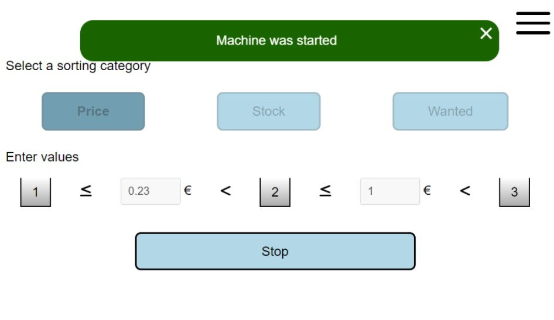
When the machine is running, the category buttons and input fields are disabled and can’t be changed. When clicking on the stop button, the machine is stopped, and the sorting values can be changed again.
Status page
keyboard_arrow_down
keyboard_arrow_up
The status page (http://localhost:4200/status) shows the picture of the current card and the recognized card. When a new picture is taken by the raspberry pi it is displayed on the left side. While the computer vision model runs to recognize the card a loading spinner is displayed:
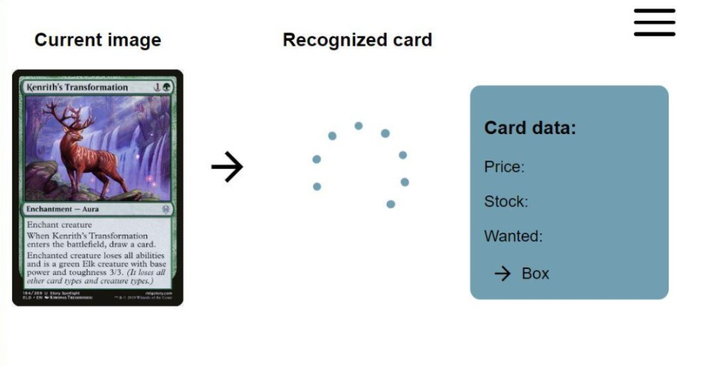
When the card is recognized the picture and the price, stock and wanted values of the recognized card, as well as the number of the box the card is sorted in are displayed on the right side:
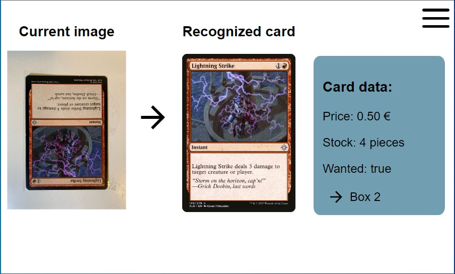
When an image cannot be found a default image with an error message is displayed instead:
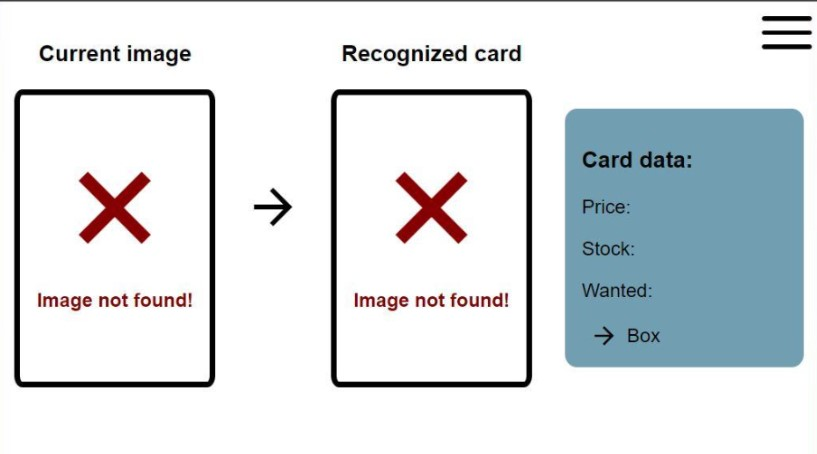
When Poromagia's database does not have the card in their storage:
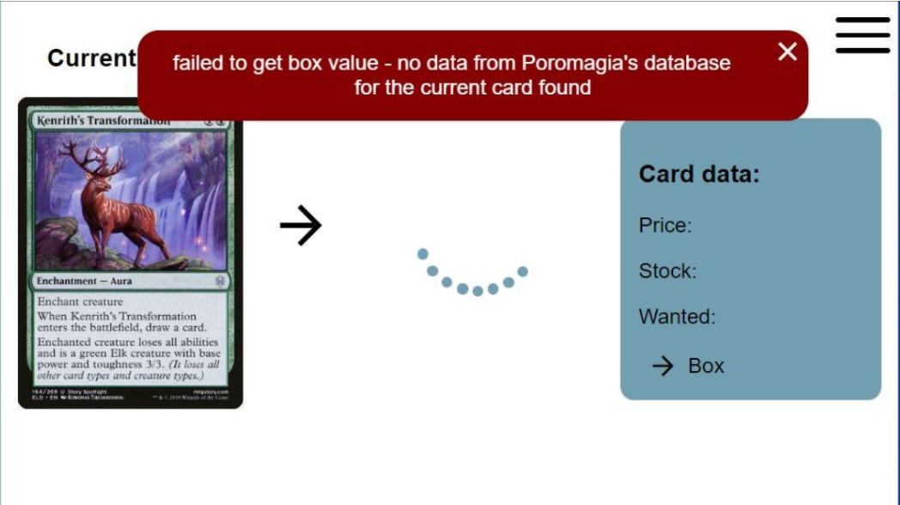
Statistics
keyboard_arrow_down
keyboard_arrow_up
On the statistics page (http://localhost:4200/statistics) different statistics data is displayed according to the selected values. The time period and the diagram type can be selected in a dropdown, which can be expanded by clicking on the arrow symbol:
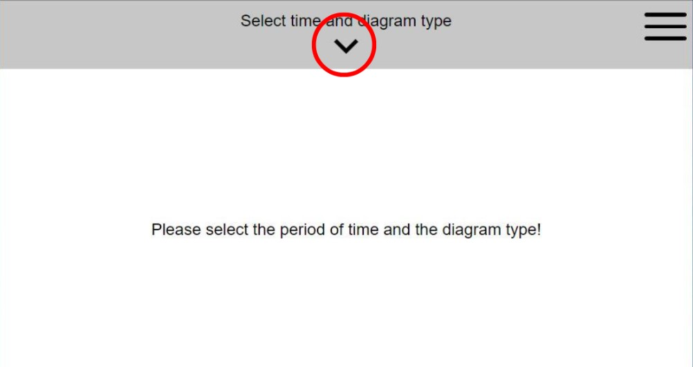
When the dropdown is expanded the date values and the diagram can be selected with the date-pickers and the diagram buttons:
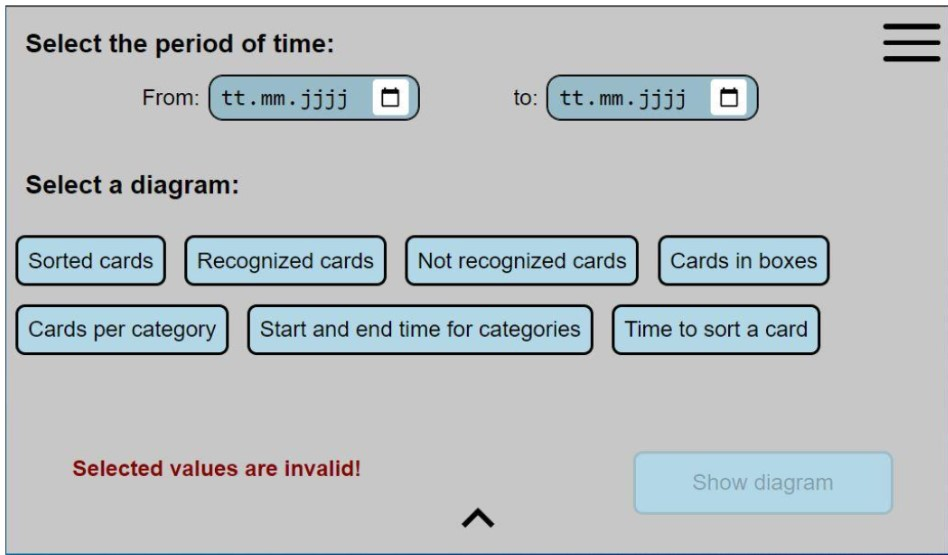
If there are invalid values or there are values that are not set the warning “Selected values are invalid!” is displayed and the button to show the selected diagram is disabled:
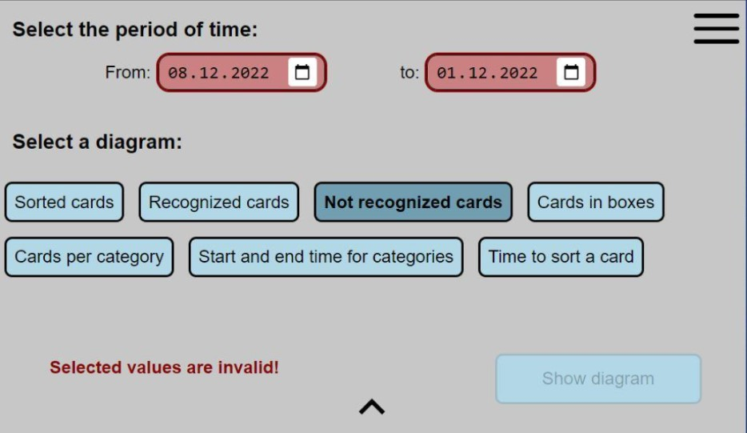
When all values are set correctly the diagram can be displayed by clicking on the “Show diagram” button or the arrow symbol:
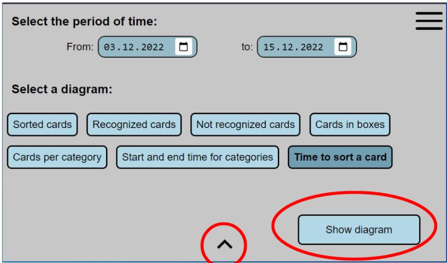
Depending on the selected diagram different charts or tables are displayed:
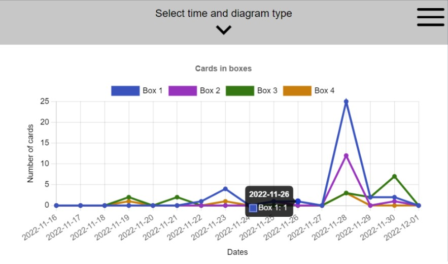
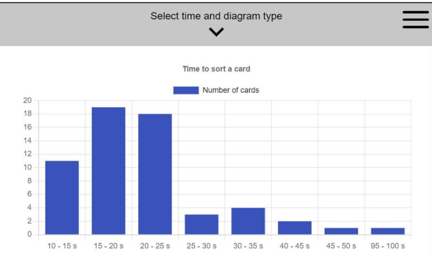
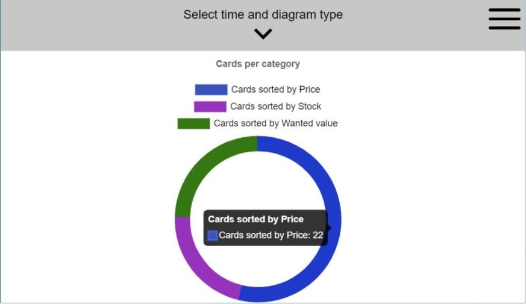
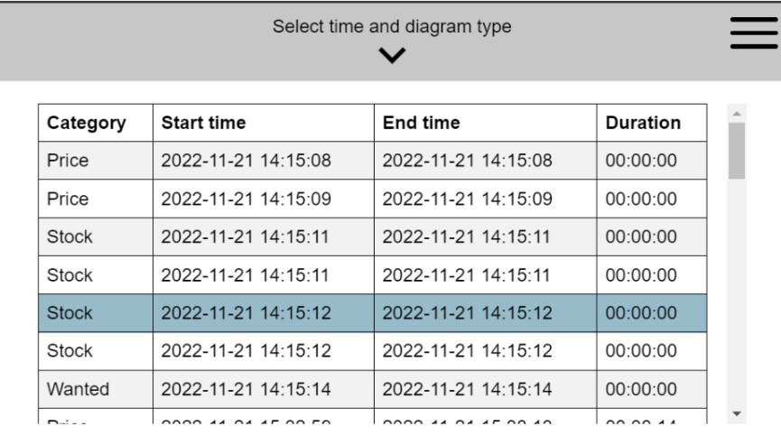
It is also possible to display multiple datasets in one graph. When selecting “Sorted cards”, “Recognized cards” and “Not recognized cards” for example, all three datasets are displayed in the graph:
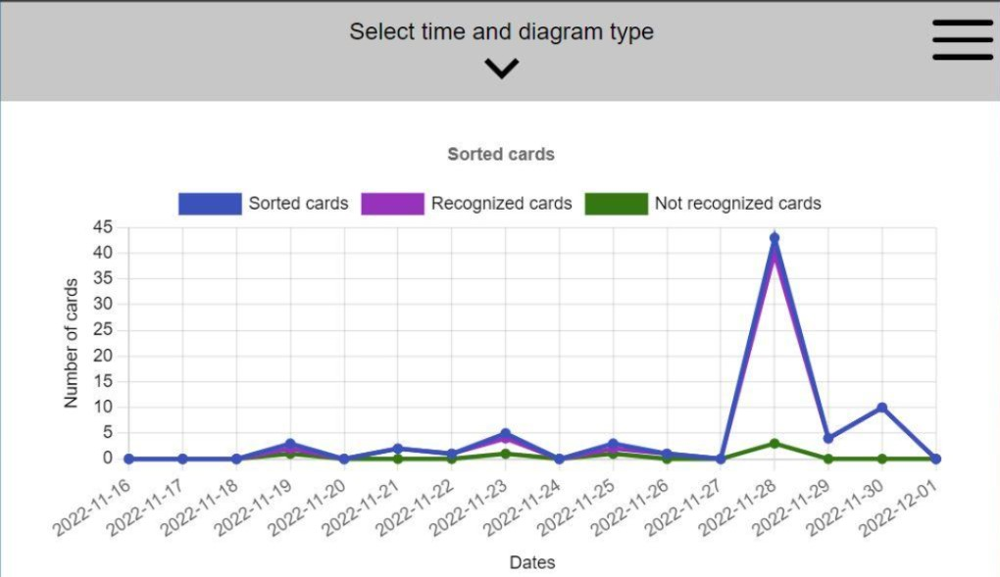
When there is no data in that period of time, the following warning appears:
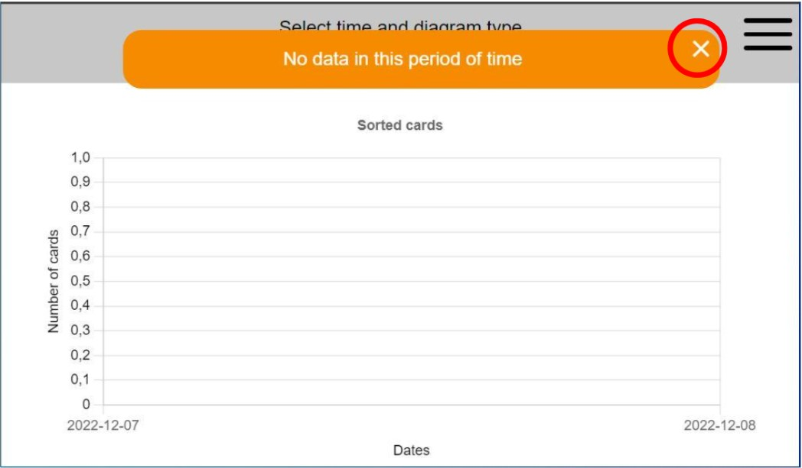